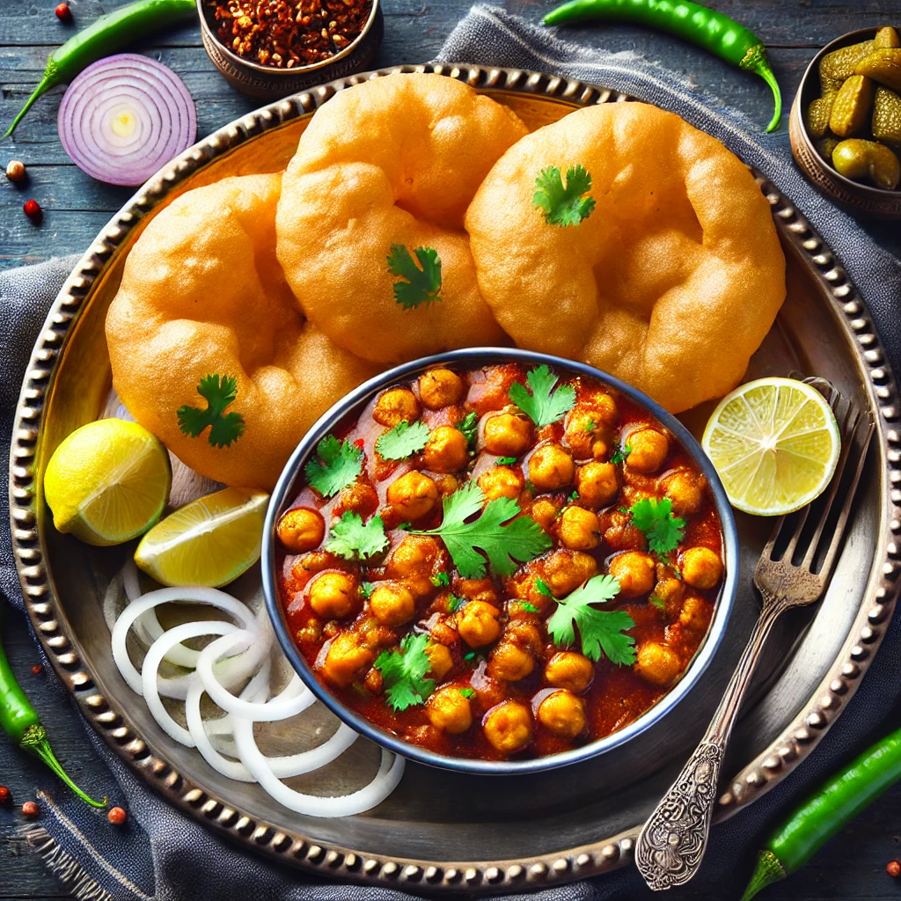

Home
Chole Bhature

Description
Chole Bhature is a popular North Indian dish consisting of spicy, flavorful chickpea curry (Chole) served with deep-fried, fluffy bread (Bhature). This hearty and indulgent meal is a favorite street food, commonly enjoyed for breakfast or lunch. Pair it with pickles, onions, and a glass of lassi for an authentic experience!
Ingredients
For Chole (Chickpea Curry):
- 1 cup dried chickpeas (or 1 can cooked chickpeas)
- 1 tbsp oil or ghee
- 1 bay leaf
- 1 cinnamon stick
- 2 cloves
- 1 black cardamom
- 1 tsp cumin seeds
- 1 onion (finely chopped)
- 1 tbsp ginger-garlic paste
- 2 tomatoes (pureed)
- 1 green chili (optional)
- ½ tsp turmeric powder
- 1 tsp red chili powder
- 1 tsp coriander powder
- 1 tsp cumin powder
- 1 tsp chole masala or garam masala
- 1 tsp kasuri methi (dried fenugreek leaves)
- 1 tsp amchur (dry mango powder) or lemon juice
- Salt to taste
- 2 cups water
- Fresh coriander for garnish
For Bhature (Fried Bread):
- 2 cups all-purpose flour (maida)
- ¼ cup semolina (sooji)
- ½ cup yogurt
- ½ tsp salt
- ½ tsp sugar
- ½ tsp baking soda
- 1 tbsp oil
- Water (as needed for kneading)
- Oil for deep frying
Steps
Prepare Chole (Chickpea Curry)
Soak and Cook Chickpeas:
- Soak dried chickpeas overnight.
- Pressure cook with 2 cups water and a pinch of salt until soft (about 4-5 whistles). Drain and set aside.
Prepare the Masala:
- Heat oil in a pan. Add bay leaf, cinnamon, cloves, black cardamom, and cumin seeds. Sauté until fragrant.
- Add chopped onions and cook until golden brown.
- Stir in ginger-garlic paste and sauté for 1 minute.
- Add tomato puree and cook until oil separates.
Cook the Chole:
- Add turmeric, red chili powder, coriander powder, cumin powder, and chole masala. Stir well.
- Add cooked chickpeas and mix thoroughly.
- Pour in 2 cups of water and simmer for 10-15 minutes.
- Crush kasuri methi between your palms and add it along with amchur or lemon juice.
- Garnish with fresh coriander leaves.
Prepare Bhature (Fried Bread)
Knead the Dough:
- In a bowl, mix flour, semolina, salt, sugar, and baking soda.
- Add yogurt and oil, then gradually add water to form a soft dough.
- Cover and let it rest for 2 hours.
Roll and Fry:
- Divide the dough into small balls and roll them into circles.
- Heat oil in a pan and deep-fry each bhatura until golden and puffed.
- Remove and drain on paper towels.